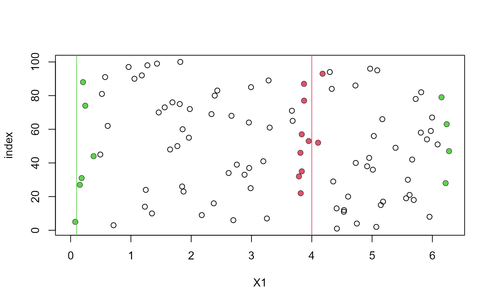

Uses a user-supplied function to find the k nearest neighbours of
specified points in a dataset, adding the option to wrap certain variables
on a torus.
nnt(data, query = data, k = min(10, nrow(data)), fn = RANN::nn2, torus, ranges, method = 1, ...)
Arguments
| data | An \(M\) by \(d\) numeric matrix or data frame. Each of the \(M\) rows contains a \(d\)-dimensional observation. |
|---|---|
| query | An \(N\) by \(d\) numeric matrix or data frame. Each row
contains an \(d\)-dimensional point that will be queried against
|
| k | An integer scalar. The number of nearest neighbours, of the
points in the rows of |
| fn | The function with which to calculate the nearest neighbours.
The syntax of this function must be |
| torus | An integer vector with element(s) in
{1, ..., |
| ranges | A |
| method | An integer scalar, equal to 1 or 2. See Details. |
| ... | Further arguments to be passed to |
Value
An object (a list) of class c("nnt", "donut") containing the
following components.
An \(N\) by \(d\) integer matrix of the k
nearest neighbour indices, i.e. the rows of data.
An \(N\) by \(d\) numeric matrix of the k
nearest neighbour distances.
The arguments data, query,
k and fn (in fact substitute(fn)).
If torus is supplied, the
arguments torus, ranges and method.
The call to spm.
Details
If method = 1 then the data are partially replicated, arranged
around the original data in a way that wraps the variables in torus on their respective
ranges in ranges. Then fn is called using this replicated
dataset as the argument data. If k is large and/or
data is a sparse dataset then it is possible that a single
observation contributes more than once to a set of nearest neighbours,
which is incorrect. If this occurs then nnt uses method 2 to
correct the offending rows in nn.idx and nn.dists in the
returned list object.
If method = 2 then the
following approach is used for the point in each row in query.
The data indexed by torus are shifted (and wrapped) so that the
point is located at the respective midpoints of ranges.
Method 2 is efficient only if the number of points in query is
small.
If torus is missing then fn is called using
fn(data = data, query = query, k = k, ...), so that a call to
nnt is equivalent to a call to the function chosen by fn.
References
Arya, S., Mount, D., Kemp, S. E. and Jefferis, G. (2019) RANN: Fast Nearest Neighbour Search (Wraps ANN Library) Using L2 Metric. R package version 2.6.1. https://CRAN.R-project.org/package=RANN
Arya, S., Mount, D., Kemp, S. E., Jefferis, G. and Muller, K. (2018) RANN: Fast Nearest Neighbour Search (Wraps ANN Library) Using L1 Metric. R package version 2.5.2. https://CRAN.R-project.org/package=RANN.L1
Elseberg J., Magnenat S., Siegwart R., Nuchter, A. (2012) Comparison of nearest-neighbor-search strategies and implementations for efficient shape registration. Journal of Software Engineering for Robotics (JOSER), 3(1), 2-12 https://CRAN.R-project.org/package=nabor
See also
RANN::nn2,
RANN.L1::nn2,
nabor::knn: nearest neighbour searches.
plot.nnt plot method for objects returned from
nnt (1 and 2 dimensional data only).
Examples
got_RANN <- requireNamespace("RANN", quietly = TRUE) got_RANN.L1 <- requireNamespace("RANN.L1", quietly = TRUE) got_nabor <- requireNamespace("nabor", quietly = TRUE) set.seed(20092019) # 2D example from the RANN:nn2 documentation (L2 metric) x1 <- runif(100, 0, 2 * pi) x2 <- runif(100, 0, 3) DATA <- data.frame(x1, x2) if (got_RANN) { nearest <- nnt(DATA, DATA) } # Suppose that x1 should be wrapped ranges1 <- c(0, 2 * pi) query1 <- rbind(c(6, 1.3), c(2 * pi, 3), c(3, 1.5), c(4, 0)) if (got_RANN) { res1 <- nnt(DATA, query1, k = 8, torus = 1, ranges = ranges1) plot(res1, ylim = c(0, 3)) }# Suppose that x1 and x2 should be wrapped ranges2 <- rbind(c(0, 2 * pi), c(0, 3)) query2 <- rbind(c(6, 1.3), c(2 * pi, 3), c(3, 1.5), c(4, 0)) if (got_RANN) { res2 <- nnt(DATA, query2, k = 8, torus = 1:2, ranges = ranges2) plot(res2) }# Use nabor::knn (L2 metric) instead of RANN::nn2 if (got_nabor) { res3 <- nnt(DATA, query2, k = 8, fn = nabor::knn, torus = 1:2, ranges = ranges2) plot(res3) } # Use RANN.L1::nn2 (L1 metric) if (got_RANN.L1) { res4 <- nnt(DATA, query2, k = 8, fn = RANN.L1::nn2, torus = 1:2, ranges = ranges2) plot(res4) }